| Reference | ||
|---|---|---|
|
|
|
|
| Tasks | Updating This Document | |
On project nodes in navigation views (Navigator, Package Explorer etc.) the following Git actions are available for projects shared with the Git team provider:
main project menu
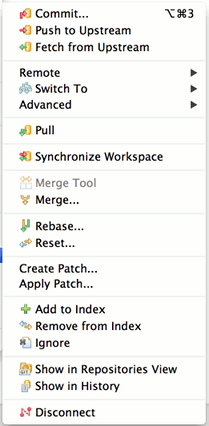
"Remote" sub-menu

"Switch To" sub-menu
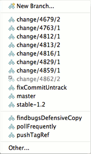
"Advanced" sub-menu

On resource nodes (files and folders) in navigation views the following Git actions are available for projects shared with the Git team provider:

In the Repositories View the menu depends on the node type which is selected

Menu on repository nodes:
Menu on branch nodes:

Menu on tag nodes:
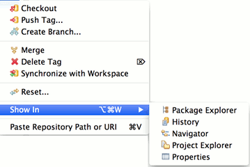
Menu on Reference nodes:
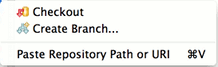
Menu on Remote nodes:

Menu on Fetch Configuration nodes:
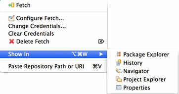
Menu on Push Configuration nodes:

Menu on Working Tree nodes:

Menu on entries in the History View's commit list
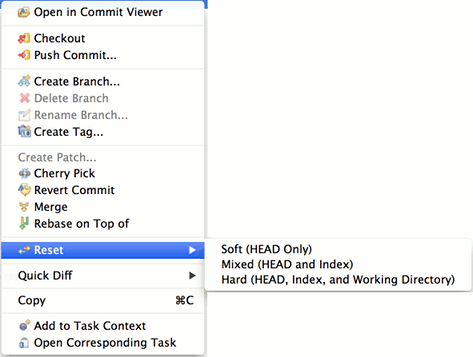
Menu entries in the History View's Quickdiff sub menu
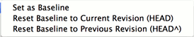
In order to ease use of the most frequently used Git actions the Git Command Group can be activated to show a Git Workbench Toolbar and/or Menu

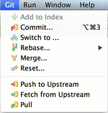
Window > Open Perspective > Git Repository Exploring opens the Git Repository Exploring perspective
Window > Open View > Git > Git Repositories opens the Git Repositories view which is explained in detail here.
The History View for Resources under Git version control is a commit-centric view of the resources in a given Repository. It can be used to perform the following tasks:
The History view can be opened by
Once the view is open, you can activate the Link with Selection button to keep the input of the view in sync with the selection in the explorer automatically.
The History view is organized in several panes:

The upper pane is the Commit Graph displaying the commit log (or commit history) in reverse chronological order (newest commit on top). Below the commit graph, there are by default two panes: on the left side, the Revision Comment area, which shows the commit message and a textual Diff of the file or files in the commit, and on the right side, the Revision Detail area, which shows a table of the files that were changed by the commit.
The first column of this table describes the nature of the change for each file:
The content of the lower panes depends on the selection in the upper pane and is updated automatically when this selection changes.
Both lower panes can be switched on and off separately by right-clicking anywhere in the upper pane and selecting Show Revision Comment and Show Revision Details, respectively.
Above the Commit Graph, the current input is visualized. The input is always a workspace resource, either a project, a folder, or a file. After the type of the input, the path is shown, followed by the name of the Repository containing the resource in square brackets.
The Commit Graph area is the main part of the History View. By default, it shows the currently checked out commit and all its ancestors, i.e. the first entry in the list is the checked out commit. The following picture is used to explain some of the features of the History View:

Each line in the Commit Graph corresponds to a commit. Branches, tags and HEAD are visualized as follows:
(our example doesn't have remote branches).
The line on the left side is the actual commit graph, which shows the parent-child relation of the commits in the list (each commit has at least one parent, except for the very first commit in a Repository). There can be forks, which correspond to a branch operation, and joins, which correspond to a merge operation. In our example, there was a branch "experimental" created after the commit with branch "beforeSplit", and the same file was changed both in the "master" and in the "experimental" branch. The last commit is a merge commit where the content of the "experimental" branch was merged with the "master" branch.
The exact change can be inspected by marking a commit and looking at the Revision Comment area. When scrolling down in the Revision Comment area, a textual diff for the changes will be visible, in our example it says that the content of Project1/f1/file1.txt was changed from "modified" to "modified in master". When selecting the next commit (which corresponds to the "experimental" branch), a similar diff would be displayed, saying that the content of that file was changed from "modified" to "modified in experimental". The newest commit is the result of merging "experimental" into "master". Accordingly, the new commit has two ancestors and the "master" and "experimental" lines are joined again.
If the current input is already a file, right-clicking Open on a commit will open an editor with the file content corresponding to the currently selected commit. If the file does not exist in the selected commit, an error message will be displayed. Clicking Compare with working tree will open a compare editor comparing the file content of the currently selected commit with the file content in the workspace.
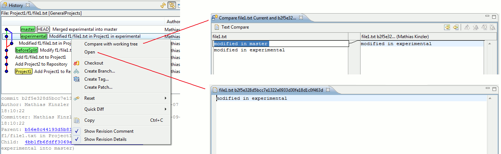
The Open and Compare with working tree actions can also be executed by double-clicking on a commit: if the "Compare Mode" toolbar button (see below) is down, Compare with working tree will be executed, otherwise Open.
It is possible to compare the contents of two commits filtered by the current input by selecting the two commits and right-clicking on Compare with each other. If the current input is not a file, there is an additional menu action Compare with each other in Tree. The first action opens an Eclipse compare editor, the second opens the Git Tree Compare View.
Furthermore, it is possible to select any number of commits and right-click Open to see all versions of the file corresponding to the selected commits (one editor will be opened per version).
If the current input is not a file, then there won't be menu actions for Open. However, it is possible to double-click on an entry the Revision Detail area. If compare mode is active, a compare editor will be opened showing the changes for the file being double-clicked in the currently selected commit (i.e. a diff of the file content in the currently selected commit against the file content of this commit's ancestor). If compare mode is not active, an editor with the file content corresponding to the currently selected commit is shown.

The filter settings can be changed using the corresponding toolbar actions (see below). By default, the "Resource" setting is active, i.e. only those commits are shown in the list that contain changes for the current input. If the current input is not a file, all commits are shown that contain changes for any child of the current input.
If the filter setting is "Resource" and the current input is a file, then the list of commits contains only those commits that contain changes for that file. This is useful when analyzing the history of that file. In some cases, however, it is helpful to also see other commits which do not change the actual file. For example, it may be interesting to see whether a given change in the file was before or after some other commit which does not change that file itself. In our example, we might want to know whether a given change was "before" or "after" the commit tagged as "Project1". By changing the filter setting from "Resource" to "Repository", this is easily done:

The behavior of the other two settings ("Folder" and "Project") is similar in that they include the commits that change any resource in the parent folder of the current input or any resource in the project of the current input, respectively. In our example above, if filter setting "Project" would be used, the commit "Add Project2 to Repository" would not be shown, is it doesn't change anything in the project of the current input (Project1/f1/file1.txt).
Alternatively, in order to see all commits pertaining to a specific project, one could change the history view input to that project. However, the file-specific menu actions would then not be available.
The first four buttons in the History View's toolbar are the standard buttons for Refresh, Link with Selection, Pinning and Navigation History.
If the "Find" toolbar button is down, a search bar is displayed in the lower part of the view which allows to search for commits in the commit log. Depending on the setting in the drop-down list in the search bar the commit's title, comment, author or committer are searched.
The found search hits are high-lighted in bold and the "Next" and "Previous" buttons allow to jump to the next or previous commit matching the search criteria:

The next four toggle buttons in the view toolbar control how the displayed commits are filtered with respect to the current input:

The buttons are working as radio buttons, i.e. one of the four buttons must always be down.
Note that not all combinations of filter setting and current input are meaningful; for example, if the current input is a project, the "Project" option is in fact the same as the "Resource" option.

The next button is again a toggle, activating "Compare Mode". If it is down, certain double-click actions (see above) will open a compare editor instead of a normal editor.
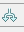
This toggle activates the "All Branches" mode. By default, only those commits are shown in the commit log that can be reached from the currently checked out commit, i.e. the Commit Graph ends with the currently checked out commit and newer commits are not shown. If this button is down, all commits will be shown in the commit log. This is illustrated in the following picture from our example. The branch "beforeSplit" is currently checked out; by activating the toggle, the newer branches will become visible:

Most of the toolbar actions are available in the View Menu, too. In addition, the following toggles are available:
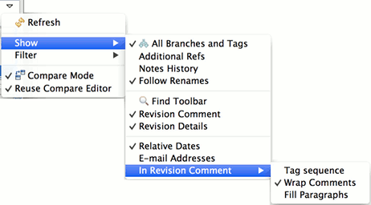
and the Filter submenu allows to configure filter settings

"Additional Refs" toggles the visibility of certain Refs created during actions like fetch, rebase, merge, for example FETCH_HEAD, ORIGIN_HEAD... This can be helpful to remove clutter from the history view.
"Notes History" toggles the displaying of Gerrit's review notes branch/ref in the History view
"Follow Renames" toggles whether renames of a selected resource should be followed in the History View, if the "Resource" filter is used. This preference can also be configured in the preference wizard Preferences > Team > Git > History > Follow Renames.
"Revision Comment" toggles the visiblity of the Revision Comment area.
"Revision Details" toggles the visibility of the Revision Detail area.
If "Relative Dates" is checked, the commit dates are shown as relative dates instead of absolute dates.
"E-mail Adresses" toggles the display of committer e-mails.
The sub-menu "In Revision Comment" opens a sub-menu with some more toggles that govern the appearance of the Revision Comment area:
"Tag sequence" allows to show/hide a couple of lines indicating the last tag in the list of ancestors of the given commit and the next tag in the list of successors of the given commit, i.e. the tags preceding/following the given commit.
The "Wrap Comments" and "Fill paragraphs" toggles govern the formatting within the Revision Comment area.
"Revision Details" and "Revision Comments" are also available by right-clicking anywhere in the Commit Graph area.
"Tag sequence", "Wrap Comments" and "Fill paragraphs" are also available by right-clicking anywhere in the Revision Comment area.
The context menu in the Commit Graph area is slightly different, depending on whether the current is a File or a Folder/Project, respectively. The following menu entries are always available:
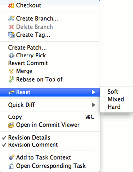
If the current input is a File, there are some other actions available; if exactly one commit is selected, there are three additional options:

and if exactly two commits are selected, the menu will appear like this:

If more than two commits are selected, only the "Open" action and the "Quickdiff" menu will be available.
This action is only available if the current input is a file and a single commit is selected. It will open a compare editor comparing the file content of the selected commit with the file content in the working tree.
This action is only available if the current input is a file and exactly two commits are selected. It will open a compare editor comparing the file content of the selected commits with each other.
This action is only available if the current input is a file. It will open an editor for each selected commit displaying the content of the file for the given commit.
This checks out the currently selected commit. If a branch exists for this commit, the branch is checked out, if more than one branch exists for this commit, a dialog will be shown asking which branch should be checked out. If no branches exist for the commit, the commit will be checked out and HEAD will become detached.
Creates a branch on the currently selected commit. A dialog will be shown asking for a branch name and whether the newly created branch should be checked out.
This action will be enabled if a branch exists for the currently selected commit, which is not checked out. If there is a single branch on this commit, which is not checked out, this action will delete this branch immediately. If multiple such branches exist, a dialog will be shown asking which branches should be deleted. If commits become unreachable on "Delete Branch" a confirmation dialog will be shown to prevent accidental unreachability of commits.
Creates a tag on the currently selected commit. A dialog will be shown asking for a tag name and a tag message.
This action is not available on the very first commit of a Repository. It will create a patch containing the changes of the currently selected commit compared to that commit's predecessor. A dialog will be shown asking whether the patch should be created as file or in the clipboard and whether to use the Git patch format of the generic patch format.
Applies the change introduced by the selected commit on top of the currently checked out commit.
Reverts the changes that the selected commit introduces by creating a new commit on top of the currently checked out commit.
Merges the selected commit into the currently checked out branch.
Rebases the currently checked out branch on top of the selected commit.
This action resets the Repository containing the current input to the currently selected commit. Depending on the choice of the sub-menu, a soft, mixed, or hard reset will be performed.
These two actions set the quickdiff basline for the repository to HEAD or to the parent of HEAD. These actions are always available, even if more than one commit is selected.
This action is only available if a single commit is selected; it will st the quickdiff baseline for the repository to the selected commit.
Copies the IDs of the currently selected commit or commits into the clipboard.
Toggles the visibility of the Revision Comment area.
Toggles the visibility of the Revision Details area.
Only available when right-clicking on the Revision Comment area. If active, the comments will be auto-wrapped to fill the display area, otherwise the wrapping of the commit message will be used.
Only available when right-clicking on the Revision Comment area. If active, the commit message will be displayed without unnecessary line breaks.
You may drag and drop commits from the commit graph either onto a Mylyn Task or into a folder on your harddisk. In both cases, EGit will automatically create a patch you may attach to a bug or store on disk.
The Revision Details Area shows a table of the files that were changed by the selected commit. Selecting the context menu action Show Annotations on selected files will open the file in a (read-only) editor and display an annotation ruler with commit and author information for each line in a file. See this section.
The menu command Team > Synchronize Workspace will launch the Synchronize View. This view allows you to inspect the differences between the resources in the local workspace and a local or remote tracking branch. Alternatively you may compare a local and a remote tracking branch. Comparison of two remote tracking branches as well as menu commands on the Synchronize View are not yet available in this EGit version and will be provided in a future release.
Here is what the Git Synchronize View looks like:

The Synchronize View shows the synchronization state of resources in your workspace or a local branch compared to those in another local or remote tracking branch representing the state of a branch from a remote repository. This state is shown by using icons and can also be configured to show the state as text appended to the resource name.

A description of the icons is shown in the table below:
| Icon | Description |
|---|---|

|
An incoming addition means that a resource has been added to the target branch. |

|
An incoming change means that the file has changed in the target branch. |
| An incoming deletion means that a resource was deleted from the target branch. | |
| An outgoing addition means that the file was added to your workspace or source branch and is not yet in the target branch. | |

|
An outgoing change means that the file was changed in your workspace or source branch. |

|
An outgoing deletion is a resource that has been deleted in your workspace or source branch. |
| A conflicting addition means that the resource has been added in your workspace or source branch and in the target branch. | |

|
A conflicting change means that the file has been changed in your workspace or local branch and in the target branch. A manual or automatic merge will be required. Also, any entries in the view that contain children that are conflicts will also be decorated with the conflict icon. This is done to make conflicts easy to find. |

|
A conflicting deletion means that the resource was deleted in your workspace or source branch and in the target branch. |
The Synchronize View can be filtered using modes using either the toolbar actions or the menu items in the view's drop down menu. Modes can be used to show only incoming, outgoing or conflicting changes.
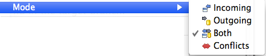
The Synchronize View is capable of displaying different model representations of the resources. Each product may contain its own product specific representations. The Eclipse SDK comes with three models:
In addition to to the models, there is also a Flat Presentation which displays all the out-of-sync elements as top level elements.
The Synchronize view provides toolbar actions for navigating through the changes in the view. These actions not only navigate between files but also go from change to change within a file.
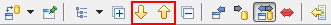
The tree in the Synchronize View can easily be expanded and collapsed from the tool bar.

This view will be opened by some of the Compare With actions (see Comparing Content). When started from a resource (e.g. a project or folder), it will look similar to the resources in the workspace. However, the usual icons on the files will be replaced with icons showing the change state (added, deleted, changed, or unchanged).
The changes can be browsed and a double-click on a file will open a compare editor for this file (this only makes sense on "changed" files, in case of added or deleted files, one side of the compare editor will be empty, whereas unchanged files will show the same content on both sides of the editor):

It is possible to hide unchanged files by clicking the "Hide files with equal content" button in the toolbar.
The Git Tree Compare View can also be started without having workspace resources as starting point (for example by comparing two commits in the history view when the input of the history view is a Repository and not a workspace resource). In this case, the complete content of the Repository is shown and both projects and folders appear as simple "folder" icons:


This view provides an equivalent for git status showing changes made in the working tree. Unstaged changes which have not yet been transferred to the git index are displayed in the
Unstaged Changes pane, changes which have already been "added" (staged) to the Git index are shown in the
Staged Changes pane. By default these panes are displayed in a row layout, which can be changed to a column layout by the
Column Layout option. The Staged- and Unstaged Changes panes by default show the full path of the files. They can be configured by the
Show File Names First option to show the file names first, followed by the directory that the files are located in.
Double-click modified files to open a compare view. If fired from the "unstaged" pane the compare view will show the not-yet staged changes. When fired from the "staged" pane it will display the already staged changes. To open a file in the editor, use the Open Workspace Version action on the file's context menu.
To stage a file, drag it from the Unstaged Changes pane to the Staged Pages pane. Alternatively, use the Add to Git Index action on the file's context menu in the Unstaged Changes pane. The Replace with File in Git Index action will replace the selected file in the working tree. If the file is unstaged, it will be reset. If it is staged, the working tree version will be replaced with the staged version from the Git index.
To unstage a file, drag it from the Staged Changes pane to the Unstaged Changes pane. Alternatively, use the Remove from Git Index action on the file's context menu.
The commit action will commit the staged changes only -- similar to what git commit does in native git. An integrated commit message editor allows to edit the commit message for the commit. In contrast to the commit dialog, the staging view can be kept open while doing changes. This allows for incrementally writing the commit message along with the changes. The commit message being edited is associated with the repository, the staging view is linked with. It is not stored persistently and will get lost if the staging view or Eclipse are closed.
To commit, press Ctrl+Enter ( Command+Enter on Mac OS X) in the commit message text field, or click on the Commit or Commit and Push button.
The Staging View's view menu allows to configure the Staging View
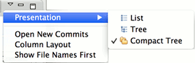
If you are working on a large change and many files are displayed in the Staging View you may use the "Filter Files" filter field which will filter the content of the Staging View to only show the files matching the filter you entered.

Sometimes it's useful to commit only some changes of a file. An example is when working on a feature and noticing a typo or small bug, which is unrelated to the feature.
To commit only certain changes, these changes have to be staged first. To do this, double-click on the file in the Unstaged Changes pane. This will open the compare editor. On the left side is the workspace version, on the right is the index (staged) version.
Both sides of the compare editor are editable. When changing something in the right side (index) and saving, the file will turn up in the Staged Changes pane and when committing, exactly that content will be committed.
To stage a group of changed lines, the Copy Current Change from Left to Right toolbar button (arrow icon) can be used.

The Reflog View shows the Git reflog for a selected repository. It supports showing the reflog for a specific branch by selecting the hyperlink ref name in the top right of the view. Double-clicking or selecting the context menu action Open in Commit Viewer on a reflog entry opens the corresponding commit in the commit viewer. The context menu action Checkout will checkout the selected commit and the HEAD will become detached.
Git URLs in general consist of transport protocol scheme, address of the remote server and the repository path within the remote server and for some authenticating protocols also the user ID.
EGit supports the following protocols
Git URLs are used when
Git References are also known shortly as
Refs.
They comprise
They all are named with a path using '/' as path separator and are starting with "refs".
Ref names can be abbreviated as long as the abbreviated form is unique.
E.g.
There is also a number of "reserved" names for Refs that are useful for certain scenarios:
| Ref Name | Remark |
| HEAD | Points to the currently checkout out commit |
| FETCH_HEAD | Points to the result of the last fetch operation |
| ORIG_HEAD | Points to the commit that was checked out before a merge or rebase operation was started |
For a complete list for Ref names and the order of precedence if multiple references have the same shorthand form see the section "Specifying Revisions" section of git rev-parse.
A "refspec" is used by fetch and push operations to describe the mapping between remote Ref and local Ref. Semantically they define how local branches or tags are mapped to branches or tags in a remote repository. In native git they are combined with a colon in the format <src>:<dst>, preceded by an optional plus sign, + to denote forced update. In EGit they can be displayed and also edited in tabular form in the Push Ref Specification and the Fetch Ref Specification and other dialogs.
The "left-hand" side of a RefSpec is called source and the "right-hand" side is called destination. Depending on whether the RefSpec is used for fetch or for push, the semantics of source and destination differ: for a Push RefSpec, the source denotes a Ref in the source Repository and the destination denotes a Ref in the target Repository.
A typical example for a Push RefSpec could be
HEAD:refs/heads/master
This means that the currently checked out branch (as signified by the HEAD Reference, see Git References) will be pushed into the master branch of the remote repository.
A typical example for a Fetch RefSpec could be
refs/heads/*:refs/remotes/origin/*
This means that all branches from the remote repository will be fetched into the corresponding remote tracking branches of the local repository.
Remotes are used to manage the repositories ("remotes") whose branches you track from your repository.
In EGit Remotes are defined when
A Remote first of all defines a name for the repository whose branches you track, this is important since you may want to track branches from different repositories so the name helps to understand what repository a certain operation is dealing with. In addition Refspecs specified for a given Remote define a mapping of branches and tags in your local repository to branches and tags in the remote repository. You may want to use different mappings for inbound or outbound transport operations hence there are editors to define Fetch and Push Configurations available in EGit.
.gitignore files located in the working tree specify files that intentionally should not be tracked by git. They only concern files that are not yet tracked by git. In order to ignore uncommitted changes in already tracked files refer to the
assume unchanged action.
Each line in .gitignore files defines a pattern. Git checks ignore patterns following the hierarchy of the working tree from highest to lowest. Patterns defined in higher level .gitignore files are overridden by those defined in lower levels.
Files which shall be ignored for all working on a given project are usually included in the project's repository to easily share them in the team.
Pattern format definition:
The EGit
Ignore
menu action adds the selected resource to the .gitignore file in the resource's parent directory. To enter other ignore patterns use a text editor.
As part of EGit's PDE Tools, there's a PDE Build fetch factory for Git included in the org.eclipse.egit.fetchfactory plug-in.
The map file's file format: type@id,[version]=GIT,args
Where args is a comma-separated list of key-value pairs.
Accepted args include:
Fetching is implemented as a three-step process:
|
|

|
|
| Tasks | Updating This Document |